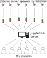

class: center, middle # Teaching Finite Elements Interactively --- # Who I am PhD student at Chair of Continuum Mechanics, Ruhr-University Bochum - German courses consist (most of of the time) of lectures and exercises - As a master student, I enjoyed two machine learning courses which were taught exclusively by jupyter notebooks and inverted classroom principle ## Motivation - Create interactive notebooks that cover the concepts of finite elements - Set up a centralized environment for the students that I can fully control - The environment needs to be accessible by a browser at any time --- # JupyterHub Server with Pluto Proxy - Let some service do the user management, in this case JupyterHub - Install packages in a shared directory: change the JULIA_DEPOT_PATH variable <div style="text-align:center;height:40%"></div> - [Blogpost with detailed instructions](https://www.maximiliankoehler.de/posts/pluto-server/) - [Repo with JupyterLab Extension](https://github.com/fonsp/pluto-on-jupyterlab) --- # Live Demo --- # Visualizing Results of Finite Element Computation <div style="text-align:center;height:40%"></div> --- # Outlook 1. Find a better way to check tasks with index notation 2. Translate the material to english 3. Setup different tracks for mathematics, physics, computer science and engineering students 4. Publish it # Acknowledgement - [Dennis Ogiermann(@termi-official)](https://github.com/termi-official) for his technical support to setup the server - [Simon Danisch(@SimonDanisch)](https://github.com/SimonDanisch) for his help to get WGLMakie/JSServe running